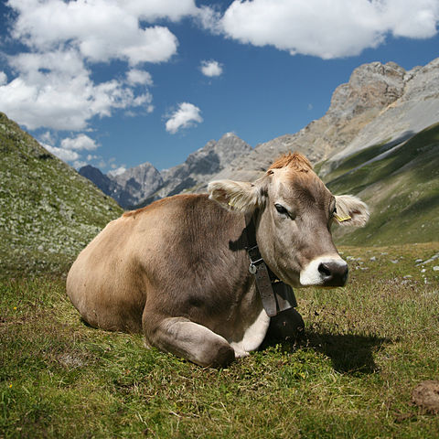

Cattle
Cattle—colloquially cows—are the most common type of large domesticated ungulates. They are a prominent modern member of the subfamily Bovinae, are the most widespread species of the genus Bos, and are most commonly classified collectively as Bos taurus. Cattle are raised as livestock for meat (beef and veal), as dairy animals for milk and other dairy products, and as draft animals (oxen or bullocks that pull carts, plows and other implements). Other products include leather and dung for manure or fuel. In some regions, such as parts of India, cattle have significant religious meaning. From as few as 80 progenitors domesticated in southeast Turkey about 10,500 years ago, according to an estimate from 2011, there are 1.4 billion cattle in the world. In 2009, cattle became one of the first livestock animals to have a fully mapped genome. Some consider cattle the oldest form of wealth, and cattle raiding consequently one of the earliest forms of theft.
Taxonomy
Cattle were originally identified as three separate species: Bos taurus, the European or "taurine" cattle (including similar types from Africa and Asia); Bos indicus, the zebu; and the extinct Bos primigenius, the aurochs. The aurochs is ancestral to both zebu and taurine cattle.[citation needed] Now, these have been reclassified as one species, Bos taurus, with three subspecies: Bos taurus primigenius, Bos taurus indicus, and Bos taurus taurus.
Complicating the matter is the ability of cattle to interbreed with other closely related species. Hybrid individuals and even breeds exist, not only between taurine cattle and zebu (such as the sanga cattle, Bos taurus africanus), but also between one or both of these and some other members of the genus Bos – yaks (the dzo or yattle), banteng, and gaur. Hybrids such as the beefalo breed can even occur between taurine cattle and either species of bison, leading some authors to consider them part of the genus Bos, as well. The hybrid origin of some types may not be obvious – for example, genetic testing of the Dwarf Lulu breed, the only taurine-type cattle in Nepal, found them to be a mix of taurine cattle, zebu, and yak. However, cattle cannot successfully be hybridized with more distantly related bovines such as water buffalo or African buffalo.
Terminology
In general, the same words are used in different parts of the world, but with minor differences in the definitions. The terminology described here contrasts the differences in definition between the United Kingdom and other British-influenced parts of world such as Canada, Australia, New Zealand, Ireland and the United States.
- An "intact" (i.e., not castrated) adult male is called a bull. A wild, young, unmarked bull is known as a "micky" in Australia. An unbranded bovine of either sex is called a "maverick" in the USA and Canada.
- An adult female that has had a calf (or two, depending on regional usage) is a cow.
- A young female before she has had a calf of her own and is under three years of age is called a heifer (/ˈhɛfər/ hef-ər). A young female that has had only one calf is occasionally called a first-calf heifer.
- Young cattle of both sexes are called calves until they are weaned, then weaners until they are a year old in some areas; in other areas, particularly with male beef cattle, they may be known as feeder calves or simply feeders. After that, they are referred to as yearlings or stirks if between one and two years of age.
- A castrated male is called a steer in the United States; older steers are often called bullocks in other parts of the world, but in North America this term refers to a young bull. Piker bullocks are micky bulls (uncastrated young male bulls) that were caught, castrated and then later lost. In Australia, the term "Japanese ox" is used for grain-fed steers in the weight range of 500 to 650 kg that are destined for the Japanese meat trade. In North America, draft cattle under four years old are called working steers. Improper or late castration on a bull results in it becoming a coarse steer known as a stag in Australia, Canada and New Zealand. In some countries, an incompletely castrated male is known also as a rig.
- A castrated male (occasionally a female or in some areas a bull) kept for draft purposes is called an ox (plural oxen); "ox" may also be used to refer to some carcass products from any adult cattle, such as ox-hide, ox-blood, oxtail, or ox-liver.
- A springer is a cow or heifer close to calving.